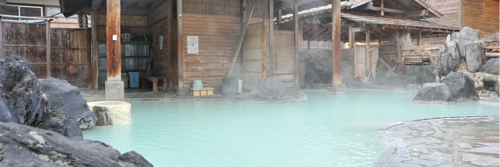
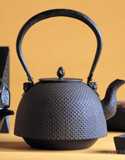

STONE HAND 岩手  イチオシ温泉集 「岩手の名湯」3選。わざわざ行きたい絶景露天から秘湯までご案内♪ これから気候がよくなるシーズンに岩手県の温泉スポットに出かけて、元気をチャージしましょう。 伝統芸能 ここでは、岩手県の伝統芸能を紹介しています。 獅子舞やさんさ踊りなどの有名なものから、 意外と知らない伝統芸能を紹介しています。 特産品 岩手県の魅力的なグルメを紹介しています。有名なものから、県民でも知らないような隠れた逸品をピックアップしています。  伝統工芸 岩手県の伝統的な工芸品の中から、特に知ってほしい工芸品をピックアップして紹介。 ちょっとマニアックなものまで紹介しているので ぜひご覧ください。 自己紹介 メンバーの紹介や作って感じた事等が書かれています！ 個性的なメンバーを集めて作っているので様々な個性を感じることができます、ご覧ください！